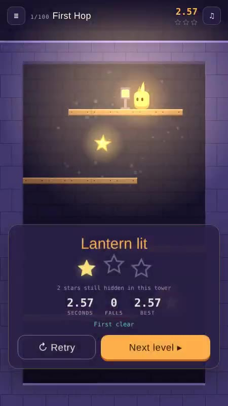
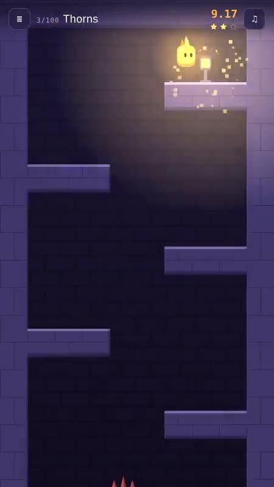
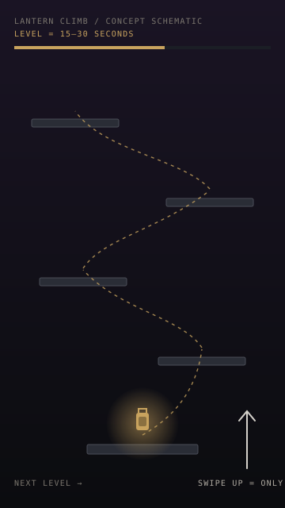

Lantern Climb
A one-thumb tower climber built from the swipe-up habit.
Concept
A one-thumb tower climber built from the swipe-up habit. It is aimed at people who spend spare minutes swiping through short-form reels: the gesture they already make all day becomes the jump, so there is nothing new to learn. Wick runs on his own and the player only chooses the moment to jump, turn or drop. A level is shorter than a reel, 15 to 30 seconds, then straight on to the next.
My role
Designer of the concept, the six control schemes and their A/B test plan, the hundred-tower progression, star placement rules and the solver-based level quality checks, delivered as a playable browser prototype.
Prototype screens
Captured from the playable prototype.



Turning the swipe-up habit into a mechanic
The design question: if the audience already swipes up all day, can that gesture become the game, and how do you find the right controls for it?
- 01
Start from the audience's habit
DecisionThe game is aimed at people who watch a lot of reels. The gesture they already make all day becomes the jump.
WhyNothing new to learn means no tutorial friction, and a level that is shorter than a reel fits the same slot in someone's day.
- 02
Make every level a few seconds
DecisionLevels run 15–30 seconds, and a fall restarts from the bottom after 0.65 seconds.
WhyShort levels make failure cheap. The quick restart keeps momentum, so a fall never feels like a punishment.
- 03
Have the character run on his own
DecisionWick runs by himself and the player only picks the moment to jump, turn or drop.
WhyRemoving movement control leaves a single skill to master: timing. It is what makes one-thumb play possible.
- 04
Treat the controls as a hypothesis
DecisionSix builds, A to F, differ only in control scheme: from one tap up to a full kit with double jump and a swipe-down drop. All share the same 100 levels and star positions.
WhyI did not want to guess which scheme feels best. A fair A/B test needs the content to be identical, so only the controls vary.
Trade-offSix builds is more testing effort. It answers the main design question with data.
- 05
Make stars a test of mastery
DecisionThree stars per level. The last is always at the lantern, so finishing gives one star, and two more are hidden. No star on the first floor, no two on the same floor and at least three rows apart. A fall resets the stars.
WhyGuaranteed progress for everyone, mastery for those who want it. Spacing stops stars from clustering, and a reset keeps the three-star run meaningful.
- 06
Prove every level can be done
DecisionAn exhaustive solver checks each of the 100 levels and every star. Stars are placed so build A, the most limited, can collect all three. A simulated player who misses by about 70 ms rejects levels it rarely clears.
WhyIf any level or star is impossible, the A/B result is meaningless. Checking with the game's own physics makes the test trustworthy.
- 07
Teach one idea at a time
DecisionLevels 1–8 are hand-built tutorials, one idea each, and level 50 is a hand-built midpoint. The rest are generated from the same pieces and ordered by measured difficulty.
WhyHand-built levels teach, and generated ones fill out the curve. Measuring difficulty makes the order objective.
Design documentation
The prototype grew from a one-gesture idea into a hundred-level build with a written pitch deck and GDD.

The swipe-up habit, turned into a game
Who it is for
People who spend their spare minutes swiping through short-form reels.
The idea
The gesture they already make all day becomes the jump. Nothing new to learn.
The promise
A level is shorter than a reel: 15 to 30 seconds, then straight on to the next.
Wick runs. You choose the moment.
- Wick runsOn his own; walls turn him around.
- Read the floorPlanks, thorns, springs, walls.
- Time itJump, turn or drop at the right beat.
- Grab starsTwo hidden on the way up.
- Light the lanternThe third star, every time.
Fall? Instant restart from the bottom, 0.65 s later. Cleared? Retry for a faster time or a missed star, or climb on.
Six control schemes, one game
The prototype ships six builds so the controls themselves can be A/B tested.
| Build | Tap | Swipe up | Swipe ← → | Extra |
|---|---|---|---|---|
| A · One tap | Jump | Jump | none | Walls turn Wick |
| B · Tap to turn | Turn | Jump | none | none |
| C · Tap jump, swipe turn | Jump | none | Face that way | none |
| D · All swipes | none | Jump | Face that way | none |
| E · Double jump | Jump, double | none | Face that way | Mid-air tap |
| F · Full kit | Jump, double | Jump, double | Flat swipes only | Swipe ↓ drops |
Every build shares the same 100 levels and star positions. Stars are placed so build A, the most limited, can still collect all three, so no scheme gets an easier test.
Six pieces build every tower
Wooden planks
Jump up through them from below.
Stone and walls
Solid. Walls turn Wick on the ground.
Thorns
One touch and the run restarts.
Springs
Launch Wick two floors up.
Wall-kicks
Jump off a wall to climb chimneys.
Double jump, drop
Builds E–F: mid-air jump; F drops through wood.
Reach the lantern, earn a star. Explore for two more.
Star 1
Guaranteed: lighting the lantern.
Stars 2–3
Hidden in the tower, taken in the same run.
300 stars
Across the whole game.
| Placement rule |
|---|
| Never on the starting floor or the lantern's floor |
| Never two stars on the same floor; at least 3 rows apart |
| A fall resets the stars: all three must come in one run |
| Best time and best star count are kept; Retry to improve |
100 towers, 10 chapters, a steady climb in difficulty
Levels 1–8 are hand-built tutorials, one idea each, and level 50 is a hand-built midpoint. The other 91 were generated from the same pieces, filtered by a solver and ordered by measured difficulty.
Difficulty is tracked as a simulated clear rate per chapter (with taps about 70 ms off), falling from the high 90s percent in the Cellar to about half of runs at Lantern Peak.
Every level and every star is proven reachable
100 / 100 levels solved
An exhaustive solver searches every input timing, frame by frame, with the game's own physics.
300 / 300 stars collectable
A simulated player misses by about 70 ms; levels it rarely clears get replaced.
6 × 100 routes replayed
Each proven 3-star route is replayed in a real browser, in every build, testing each gesture.
A warm flame in a cold night tower
Art
Wick is the only warm light; violet stone, wood and thorns sit in his glow. Everything is drawn in code, no image files.
Audio
A looping chiptune theme in A minor at 100 BPM, a rising fanfare for the lantern and a falling phrase for a fall, all synthesized live. Sound button: music and effects, effects only, or silent.
Tech
One HTML file, about 290 KB, vanilla JavaScript and canvas. Plays on phone and desktop browsers. Progress saves in the browser; keyboard works too.